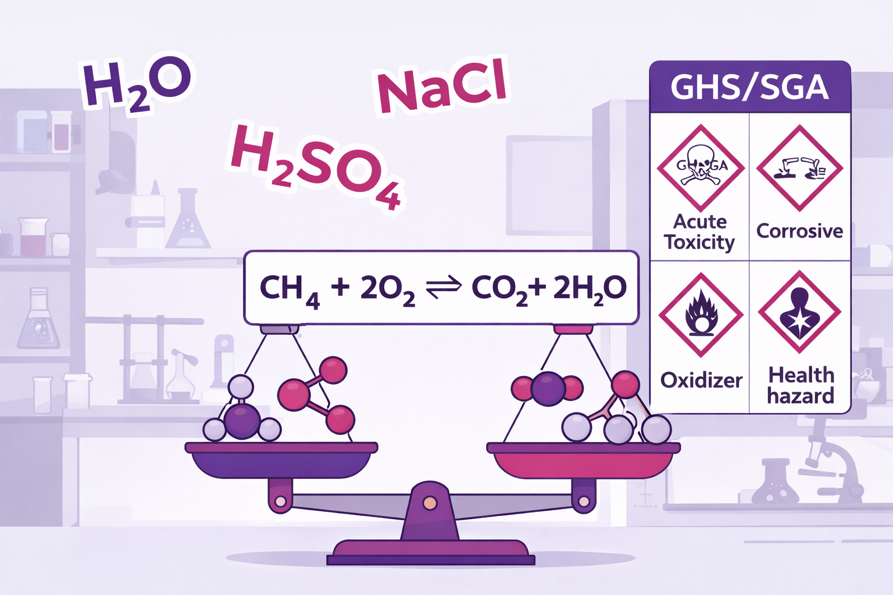
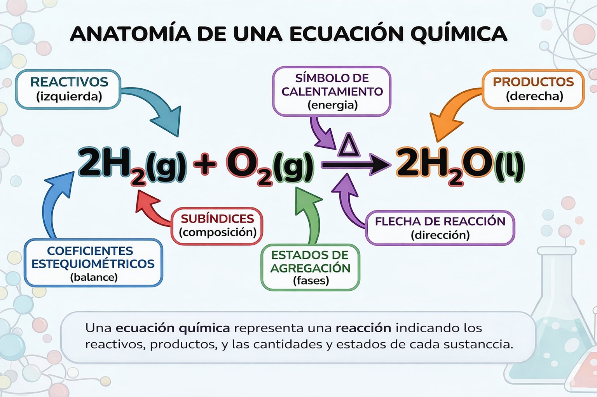

Nomenclatura, ecuaciones y protocolos de seguridad
Páginas116–145
Temas5
Extensión30 páginas

Competencias a desarrollar
Nombra y formula compuestos químicos usando nomenclatura IUPAC
Escribe y balancea ecuaciones químicas correctamente
Identifica y aplica protocolos de seguridad en el laboratorio
Interpreta el Sistema Globalmente Armonizado (SGA)
116
Tema 4.1
Compuestos Binarios
Páginas 116–121
Objetivo de aprendizaje
Comprender y aplicar las reglas de nomenclatura IUPAC para nombrar y formular compuestos binarios:
óxidos, hidruros, sales binarias y ácidos hidrácidos.
Conceptos Fundamentales
¿Qué son los compuestos binarios?
Son sustancias formadas por la combinación de dos elementos diferentes. La fórmula
general es:
AxBy
Donde A y B son elementos diferentes, y x e y son los subíndices que indican la proporción de cada
elemento.
Reglas generales de formulación
Orden de electronegatividad: El elemento menos electronegativo se escribe primero
(izquierda)
Intercambio de valencias: Los números de oxidación se intercambian como subíndices
Simplificación: Los subíndices se simplifican cuando es posible
Subíndice 1: No se escribe el subíndice cuando es 1
117
4.1.1 Óxidos
Son compuestos formados por la combinación de un elemento con oxígeno.
Tipo
Fórmula general
Ejemplo
Nombre IUPAC
Óxido básico
Metal + O
Na₂O
Óxido de sodio
Óxido ácido
No metal + O
CO₂
Dióxido de carbono
Óxido anfótero
Anfótero + O
Al₂O₃
Óxido de aluminio
Nomenclatura sistemática (IUPAC)
Se usan prefijos griegos para indicar la cantidad de átomos:
Objetivo: Observar la formación de oxisales mediante la reacción ácido-base
Procedimiento:
Accede al laboratorio virtual
Selecciona un ácido (H₂SO₄) y una base (NaOH)
Mezcla los reactivos y observa la formación de la sal
Identifica el producto formado (Na₂SO₄)
Repite con otras combinaciones ácido-base
Registro de reacciones de neutralización:
Ácido
Base
Sal formada
Nombre de la sal
H₂SO₄
NaOH
HNO₃
KOH
HCl
Ca(OH)₂
Conclusión del tema
Ideas clave del Tema 4.2
Los compuestos ternarios contienen tres elementos diferentes
Los hidróxidos contienen el grupo OH⁻ y son bases
Los oxoácidos se forman al combinar óxidos ácidos con agua
Las oxisales resultan de la neutralización ácido-base
La nomenclatura tradicional usa prefijos y sufijos según el estado de oxidación
127
Profesionales con valor
María Guadalupe García-Rojas
Química mexicana especialista en nomenclatura IUPAC
Miembro del Comité de Nomenclatura de la Sociedad Química de México, ha trabajado en la adaptación de los
nombres químicos al español latinoamericano, facilitando el aprendizaje de la química en nuestra región.
"La nomenclatura química es el idioma universal de los químicos. Dominarla es abrir una puerta al
conocimiento científico mundial."
Práctica Integradora
Ejercicio integrador: Del elemento al compuesto
A partir del elemento azufre (S), completa la cadena de formación de compuestos:
Paso 1: Formación del óxido ácido
S + O₂ → ____________
Paso 2: Formación del oxoácido
____________ + H₂O → ____________
Paso 3: Formación de la oxisal
____________ + NaOH → ____________ + H₂O
Escribe los nombres de cada compuesto formado:
Óxido: _________________________________
Oxoácido: _________________________________
Oxisal: _________________________________
128
Tema 4.3
La Ecuación Química
Páginas 129–134
Objetivo de aprendizaje
Interpretar y escribir ecuaciones químicas identificando reactivos, productos, estados de agregación y
condiciones de reacción.
Conceptos Fundamentales
¿Qué es una ecuación química?
Es una representación simbólica de una reacción química que muestra las sustancias que
intervienen (reactivos) y las que se forman (productos).
REACTIVOSA + B
→
PRODUCTOSC + D
Componentes de una ecuación química
Reactivos
Sustancias que participan en la reacción. Se escriben a la
izquierda de la flecha.
Productos
Sustancias que se forman durante la reacción. Se escriben a la
derecha de la flecha.
129
Símbolos y notaciones
Símbolo
Significado
Ejemplo
→
Produce / genera
A → B
⇌
Reacción reversible
A ⇌ B
+
Se combina con
A + B → C
(s)
Estado sólido
Fe(s)
(l)
Estado líquido
H₂O(l)
(g)
Estado gaseoso
O₂(g)
(ac)
Solución acuosa
NaCl(ac)
↑
Gas que escapa
H₂↑
↓
Precipitado
AgCl↓
Δ
Calentamiento
→Δ

130
Tipos de reacciones químicas
1. Reacción de síntesis (combinación)
Dos o más sustancias se combinan para formar un solo producto.
A + B → AB
Ejemplo: 2Na(s) + Cl₂(g) → 2NaCl(s)
2. Reacción de descomposición
Un compuesto se separa en sustancias más simples.
AB → A + B
Ejemplo: 2H₂O(l) →electricidad 2H₂(g) + O₂(g)
3. Reacción de sustitución simple
Un elemento sustituye a otro en un compuesto.
A + BC → AC + B
Ejemplo: Zn(s) + 2HCl(ac) → ZnCl₂(ac) + H₂(g)↑
4. Reacción de doble sustitución
Dos compuestos intercambian iones o partes de sus estructuras.
La ley de conservación de la masa exige ecuaciones balanceadas
Solo se modifican coeficientes, nunca subíndices
El método de tanteo es útil para ecuaciones simples
El método algebraico sistematiza el proceso para ecuaciones complejas
El método redox se aplica cuando hay transferencia de electrones
140
Tema 4.5
Seguridad en el Laboratorio: Sistema SGA
Páginas 141–145
Objetivo de aprendizaje
Identificar e interpretar los pictogramas y elementos del Sistema Globalmente Armonizado (SGA) para la
clasificación y etiquetado de productos químicos, aplicando medidas de seguridad en el laboratorio.
Conceptos Fundamentales
¿Qué es el SGA?
El Sistema Globalmente Armonizado (SGA o GHS por sus siglas en inglés) es un sistema
internacional creado por la ONU para:
Clasificar sustancias químicas según sus peligros
Comunicar información de seguridad mediante etiquetas y fichas
Estandarizar la información a nivel mundial
¿Por qué es importante?
Antes del SGA, cada país tenía su propio sistema de clasificación, lo que causaba confusión en el
comercio internacional y aumentaba los riesgos de accidentes. El SGA unifica los criterios para proteger
la salud humana y el medio ambiente.
141
Pictogramas de peligro SGA
Son símbolos estandarizados que indican el tipo de peligro de una sustancia química.
Clases de peligro
Peligros físicos
Explosivos
Inflamables
Comburentes
Gases a presión
Peligros para la salud
Toxicidad aguda
Corrosión cutánea
Irritación
Carcinogenicidad
Peligros ambientales
Toxicidad acuática
Peligro para capa de ozono
142
Elementos de la etiqueta SGA
Componentes obligatorios de una etiqueta
Identificación del producto: Nombre químico y código
Pictogramas de peligro: Símbolos correspondientes
Palabra de advertencia: "PELIGRO" o "ATENCIÓN"
Indicaciones de peligro (frases H): Describen la naturaleza del peligro
Consejos de prudencia (frases P): Medidas preventivas y de respuesta
Identificación del proveedor: Nombre, dirección, teléfono
Palabra de advertencia
Nivel de peligro
Uso
PELIGRO
Mayor gravedad
Categorías de peligro más severas
ATENCIÓN
Menor gravedad
Categorías de peligro menos severas
143
Ficha de Datos de Seguridad (FDS/SDS)
Documento de 16 secciones que proporciona información detallada sobre una sustancia química.
Las 16 secciones de la FDS
Identificación del producto
Identificación de peligros
Composición/ingredientes
Primeros auxilios
Medidas contra incendios
Medidas ante derrames
Manipulación y almacenamiento
Controles de exposición/EPP
Propiedades físicas y químicas
Estabilidad y reactividad
Información toxicológica
Información ecológica
Eliminación del producto
Información de transporte
Información reglamentaria
Información adicional
Mini Actividad
Identifica los pictogramas
Para cada sustancia, indica qué pictogramas SGA encontrarías en su etiqueta:
Sustancia
Pictogramas (nombre)
Gasolina
Cloro (blanqueador)
Ácido sulfúrico
Pesticida
144
Reto Digital
Búsqueda de Fichas de Seguridad
Actividad: Investigar FDS de productos del hogar
Instrucciones:
Elige 2 productos químicos de tu hogar (limpiador, desinfectante, etc.)
Busca la FDS del fabricante en internet
Identifica los pictogramas de peligro
Lee las frases H y P
Registra las medidas de seguridad recomendadas
Producto 1: _________________________________
Pictogramas: _________________________________
Principales riesgos: _________________________________